Assignments
Assignment 1: Basic HTML
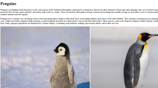A smooth introduction to HTML and associated elements or tags such as h1, h2, p, and many others.
Assignment 2: Basic CSS
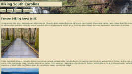Using CSS, styled a simple HTML page with fitting colors, images, and font variations in order to make a plain website into something with more character.
Assignment 3: Page Layout
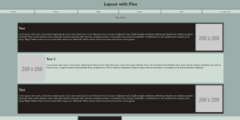Experimented with flex in HTML and CSS. Incorporated different ratio types, as well as support for a variety of different media, including lower and higher resolution screens to still be able to properly view the website as intended.
Assignment 4: Recreate Page
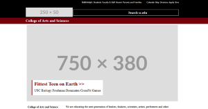Experimented with flex in HTML and CSS. Incorporated different ratio types, as well as support for a variety of different media, including lower and higher resolution screens to still be able to properly view the website as intended.
Assignment 5: Intro to JavaScript
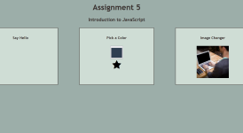Introduced to JavaScript and functionalities. This includes buttons, inputs, and modifications of the html content of elements.
Assignment 6: JavaScript Conditionals
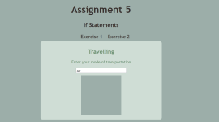Expanded JavaScript knowledge by adding conditionals into our websites. This includes observing the value of input elements, buttons, and finding more utiliiations for functions.
Assignment 7: JavaScript Loops
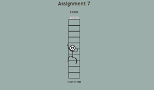Introduced to Loops, and timing functions in JavaScript.
Assignment 8: JavaScript Arrays
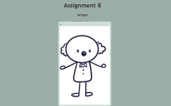Introduced to Arrays, Associative Arrays, and functions related to them. Utilized this along side the creation of a simple popup tab to show the image counterpart of a phrase.
Assignment 8: JavaScript Classes
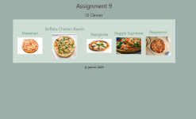Expanded understanding of JS using JavaScript's class system. I created a class for pizzas in order to create multiple objects containing features of pizzas such as ingredients, price, and sauce.
Main Project
Project Part 1
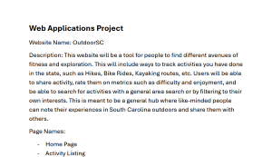Started creating ideas for a website. Ended up on a outdoorsy forum where people can share ideas, treks, and their opinions on each and every one of them.
Project Part 2
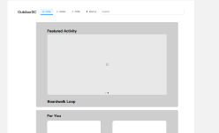Created a mockit board for prototyping the website idea. Contains all important features that will be in the final website.
Project Part 3
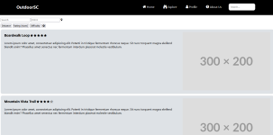Created a prototype html page based on our wireframes.
Project Part 4
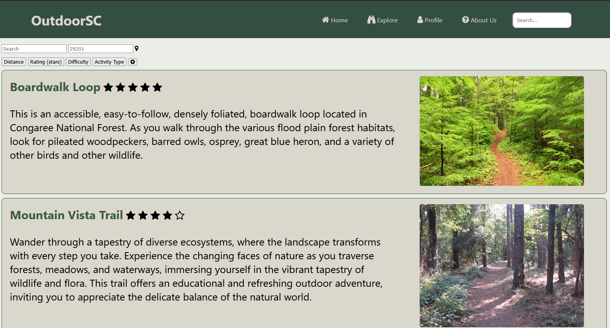Developed my prototype with a color palatte, resized images, and a navigation bar.